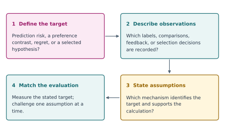

Topics of Statistical Learning#
Learn from imperfect information.
Know what the evidence supports.
Incomplete labels, comparisons, sequential feedback, and discoveries made from the data itself. A graduate course on the assumptions that make statistical learning and inference possible.
This course develops preference learning, online learning, positive–unlabelled (PU) and unlabelled–unlabelled (UU) learning, other forms of weak supervision, and selective inference after clustering. The unifying habit is to specify the observation process, the statistical target, the assumptions that identify it, and the guarantee a method actually provides.
Each of the 14 chapters contains explanations, mathematical arguments, worked examples, a downloadable experiment, exercises, and separate worked solutions. Read the example first, predict what the experiment will show, and then change an assumption. The interactive demonstrations offer a quick way to see three of these mechanisms in action.
Instructor: Chi-Kuang Yeh · cyeh@gsu.edu
Level: advanced master’s / doctoral · Format: independent study or a proposed 15-week graduate elective
A common reasoning route#


Fig. 1 The course’s common reasoning route. Each chapter fills in these steps for a different observation or selection mechanism.#
Four connected questions#
Learning route |
Central question |
Chapters |
|---|---|---|
Incomplete and weak supervision |
What can be learned when the labels are incomplete, noisy, or only available in aggregate? |
|
Preference learning |
What does a comparison identify, and which comparisons should we collect? |
|
Online learning and bandits |
How should a learner act when data arrive sequentially and feedback may be partial? |
|
Inference after selection |
How can we make a valid statement about a structure selected using the same data? |
The last route studies inference after a data-dependent choice. It connects to the learning routes through the observation and selection mechanisms; it is a distinct inferential problem from learning with weak labels.
Choose a starting point#
Read in order: begin with statistical targets, then follow the chapter links. The course guide maps the book to 15 teaching weeks.
Focus on a research problem: use the reading guide to find the relevant model, theorem, and implementation. Revisit the first chapter whenever the target becomes unclear.
Learn through computation: follow the computational workflow, run a chapter experiment, then attempt the exercises before opening the solutions.
Build a research project: use the assignments for focused practice and the project guide for a reproduction plus a consequential extension.
What you should be able to do#
By the end, you should be able to derive PU and UU risk identities; distinguish several weak-label mechanisms; fit and critique a pairwise preference model; formulate a sequential decision problem with an explicit comparator; derive a basic regret bound; explain conditional validity after selection; and design a reproducible experiment that probes a method’s assumptions.
You will need graduate probability, mathematical statistics, linear algebra, basic optimisation, and some programming experience. The workflow page includes a short readiness check and a minimal reproducible-report template.
Note
This is a developed topic-course resource. The accompanying graduate-course proposal uses STAT 8XXX, with the number and offering to be assigned. The 15-week route and assessment scheme are proposed teaching arrangements; meeting dates, registration details, and institution-specific policies will be set for an actual offering.
Course materials#
Download the complete course book · Download all labs · Course proposal · Source and build instructions